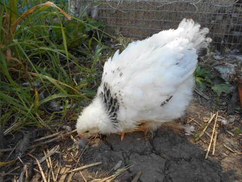
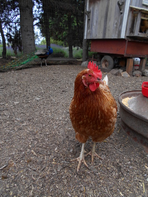
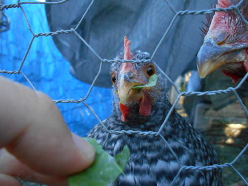
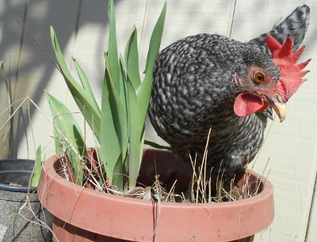
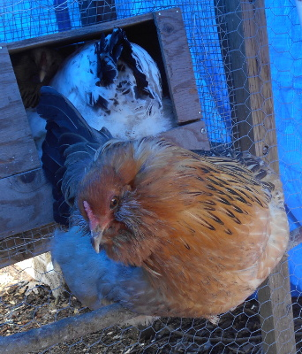

FAQ
- From what bird did the chicken originate? 
The domestic chicken is descended primarily from the red junglefowl (Gallus gallus) and is scientifically classified as the same species. As such it can and does freely interbreed with populations of red jungle fowl. Recent genetic analysis has revealed that at least the gene for yellow skin was incorporated into domestic birds through hybridization with the grey junglefowl (G. sonneratii). The traditional poultry farming view is that chickens were first domesticated for cockfighting in Asia, Africa, and Europe, rather than for egg or meat production. In the last decade there have been a number of genetic studies to clarify the origins. According to one study, a single domestication event occurring in the region of modern Thailand created the modern chicken with minor transitions separating the modern breeds. However, that study was later found to be based on incomplete data, and recent studies point to multiple maternal origins, with the clade found in the Americas, Europe, Middle East, and Africa, originating from the Indian subcontinent, where a large number of unique haplotypes occur. It is postulated that the jungle fowl, known as the bamboo fowl in many Southeast Asian languages, is a special pheasant well adapted to take advantage of the large amounts of fruits that are produced during the end of the 50-year bamboo seeding cycle to boost its own reproduction. In domesticating the chicken, humans took advantage of this prolific reproduction of the jungle fowl when exposed to large amounts of food.
- What place did chickens originate from? 
It has been claimed (based on paleoclimatic assumptions) that chickens were domesticated in Southern China in 6000 BC. However, according to a recent study, it is unclear whether those birds were the ancestors of chickens today. Instead, the origin could be the Harappan culture of the Indus Valley. Eventually, the chicken moved to the Tarim basin of central Asia. The chicken reached Europe (Romania, Turkey, Greece, Ukraine) about 3000 BC. Introduction into Western Europe came far later, about the 1st millennium BC. Phoenicians spread chickens along the Mediterranean coasts, to Iberia. Breeding increased under the Roman Empire, and was reduced in the Middle Ages. Middle East traces of chicken go back to a little earlier than 2000 BC, in Syria; chicken went southward only in the 1st millennium BC. The chicken reached Egypt for purposes of cock fighting about 1400 BC, and became widely bred only in Ptolemaic Egypt (about 300 BC). Little is known about the chicken's introduction into Africa. Three possible routes of introduction in about the early first millennium AD could have been through the Egyptian Nile Valley, the East Africa Roman-Greek or Indian trade, or from Carthage and the Berbers, across the Sahara. The earliest known remains are from Mali, Nubia, East Coast, and South Africa and date back to the middle of the first millennium AD. Domestic chicken in the Americas before Western conquest is still an ongoing discussion, but blue-egged chickens, found only in the Americas and Asia, suggest an Asian origin for early American chickens.
A lack of data from Thailand, Russia, the Indian subcontinent, Southeast Asia and Sub-Saharan Africa makes it difficult to lay out a clear map of the spread of chickens in these areas; better description and genetic analysis of local breeds threatened by extinction may also help with research into this area.
- Do chickens make good pets? 
Some people find chickens' behaviour entertaining and educational and they are sometimes kept as pets. Chickens can be tamed by hand feeding, although roosters can sometimes become aggressive and noisy. Aggression may be curbed with proper handling. Some have advised against keeping them around very young children[citation needed]. Certain breeds, such as silkies and many bantam varieties, are generally docile and are often recommended as good pets around children with disabilities.
- Are chickens useful in providing food?
The meat of the chicken, also called "chicken", is a type of poultry meat. Because of its relatively low cost, chicken is one of the most used meats in the world. Nearly all parts of the bird can be used for food, and the meat can be cooked in many different ways. Popular chicken dishes include roasted chicken, fried chicken, chicken soup, Buffalo wings, tandoori chicken, butter chicken, and chicken rice. Chicken is also a staple of many fast food restaurants.
In 2000, there were 50.4 million tons of eggs produced in the world (Executive guide to world poultry trends, 2001)[76] and an estimated 53.4 million tons of table eggs were produced during 2002.[77] In 2009, an estimated 62.1 million metric tons of eggs were produced worldwide from a total laying flock of approximately 6.4 billion hens.
Chicken eggs are widely used in many types of dishes, both sweet and savory, including many baked goods. Eggs can be scrambled, fried, hard-boiled, soft-boiled, pickled, and poached. The albumen, or egg white, contains protein but little or no fat, and can be used in cooking separately from the yolk. Egg whites may be aerated or whipped to a light, fluffy consistency and are often used in desserts such as meringues and mousse. Ground egg shells are sometimes used as a food additive to deliver calcium. Hens do not need a male to produce eggs, only to fertilize them. A flock containing only females will still produce eggs; however, the eggs will all be infertile.
- How do hens behave when nesting and laying eggs? 
Hens will often try to lay in nests that already contain eggs and have been known to move eggs from neighbouring nests into their own. The result of this behaviour is that a flock will use only a few preferred locations, rather than having a different nest for every bird. Hens will often express a preference to lay in the same location. It is not unknown for two (or more) hens to try to share the same nest at the same time. If the nest is small, or one of the hens is particularly determined, this may result in chickens trying to lay on top of each other. There is evidence that individual hens prefer to be either solitary or gregarious nesters.[18] Some farmers use fake eggs made from plastic or stone (or golf balls) to encourage hens to lay in a particular location.